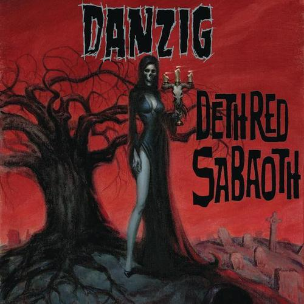

Uzun zamandır dinleyecek güzel albümler bulamamanın sıkıntısı içindeyken, dün tesadüf eseri Danzig’in yeni albümünün 22 Haziran’da çıktığını Amazon.co.uk sitesinin ana sayfasında “bana özel tavsiye edilenler†sayfasından öğrendim.
Sanırım 1993 yılından beri Danzig dinliyorum. Thrall & Demonsweatlive EP’sinden sonra dağılan orijinal Danzig kadrosundan sonra baÅŸarılı albümler yapamadığı iddia edilse de ben bu görüşe katılmayan gruptayım. Elbette ilk 4 albüm, karanlık ÅŸarkı sözleri, kendine özgü thrash metal soundu ve riffleri ile diÄŸer albümlerden çok daha iyidir, sonraki albümlerinde rastlanan sık tekrarlardan uzaktır. 1996’dan itibaren grubun deÄŸiÅŸik soundlara yönelme anlayışı çok kiÅŸiyi ÅŸaşırtmış ve gruptan soÄŸutmuÅŸ olabilir ama Danzig kendine özgü rock soundundan ve karamsar yönünden hiçbirÅŸey kaybetmemiÅŸtir. Circle of Snakes adını taşıyan bir önceki albüm bundan 6 yıl önce çıkmıştı.
Deth Red Saboath adını taşıyan son albümün çok kiÅŸi tarafından olumlu eleÅŸtiriler aldığını görmek beni sevindirdi. Bu albüm gruba 2005 yılında katılan bas gitarist Steve Zing’in ve 2006 yılında katılan baterist Johnny Kelly’nin grupla ilk çalışması. Gitarist Tommy Victor’un ise grupla ikinci albümü.
Albümde göze çarpan ilk şarkılar aynı zamanda ilk single olan On A Wicked Night. The Revengeful, Ju Ju Bone, Pyre of Souls başarılı çalışmalar. Night Star Hel ise klip çekilen ilk şarkı…